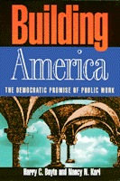

<body bgcolor="#FFFFFF" text="#000000" link="#0000FF" vlink="#CC0000" alink="#CC0000"><center><hr width="350" size="1" align="center" noshade>A look to the revival of public-spirited work as a key to the rebirth of democracy<hr width="350" size="1" align="center" noshade><p><a href="https://cdcshoppingcart.uchicago.edu/Cart/ChicagoBook.aspx?ISBN=9781566394574&&PRESS=temple" target="_top">Buy this book!</a> | <a href="https://cdcshoppingcart.uchicago.edu/Cart/Cart.aspx?PRESS=temple" target="_top">View Cart</a> | <a href="https://cdcshoppingcart.uchicago.edu/Cart/Cart.aspx?PRESS=temple" target="_top">Check Out</a></p><p></p></center><!--none//--><h1>Building America</h1>
<H2>The Democratic Promise of Public Work</H2>
<h3>Harry C. Boyte and Nancy N. Kari</h3>
<P>cloth 1-56639-457-0 $89.50, May 96, <FONT COLOR=#990033>Available</FONT>
<br>paper 1-56639-458-9 $35.95, May 96, <FONT COLOR=#990033>Available</FONT>
<BR> 272 pp
5.5x8.25
</P><BLOCKQUOTE><I>"...a marvelous piece of work. This is a book much needed, and deeply appreciated by those of us sometimes so mired in our corners of the world that we forget how many others there are out there with us."</I>
<br>&#151<B>Deborah Meier</B>, author of <I>The Power of Their Ideas </I>and director of Central Park East Schools<I></I></BLOCKQUOTE>
<p>Throughout history, work has always been the taproot of American democracy, enabling diverse people to forge connections with each other and to address the nation's problems. Through work, people gain greater visibility, authority, and a larger intellectual horizon. They come to see themselves as creators of their communities, stakeholders in the country, and guardians of the commonwealth.
<p><I>Building America, </I>in a pathbreaking analysis of diverse civic practices, argues that work is the center of effective citizenship. As late as the New Deal Era, Abraham Lincoln's idea of work-centered government remained vibrant and fueled reform movements like union organizing. Many jobs, local schools, community groups, the Civilian Conservation Corp., and other settings provided rich experiences in public work. Images of work filled popular culture&#151Will Rogers movies, Langston Hughes's poetry, post office art. But today, work has lost its larger meaning, and government has become largely a service provider.
<p>From low income communities to colleges, high-tech newspapers to government agencies and schools, Harry C. Boyte and Nancy N. Kari look to the revival of public-spirited work as a key to the rebirth of democracy in our time. Their exploration of the larger meanings of work leads to provocatively different approaches to change. These include many examples of citizen-government partnership in solving problems. By working on school reform and economic development in Baltimore, the mainly black group BUILD created a public space for overcoming searing racial divisions. Boyte and Kari explore new initiatives like the public journalism movement aimed at strengthening journalists' responsibilities to improve democracy. They offer lessons for turning jobs into public work in our changing economy. <I>Building America </I>concludes with a call for national action to renew the idea of "government by the people" through public work.
<BR>&nbsp;<h2>Reviews</h2>
<p><I>"Harry Boyte and Nancy Kari make an invaluable contribution by reminding us that democracy is about action, solving problems, and all that is implied in 'public work.'"</I>
<br>&#151<b>David Mathews</b>, President, Kettering Foundation
<p><I>"Harry Boyte and Nancy Kari have captured the words and music of Americans doing the serious work of democracy. They show us the path to restoring vitality to the American experience."</I>
<br>&#151<b>David Cohen</b>, Co-director, Advocacy Institute
<p><i>"...a thoughtful perspective to contemporary debates over the problems facing democracies and attempts to build stronger communities.... Boyte and Kari bring forward a sweeping and fascinating range of historical examples."</i>
<br>&#151<b><i>Mobilization</i></b>
<p><i>"This book argues powerfully that public work&#151work that makes things of value and importance in cooperation with others&#151is the taproot of American democracy. Public work occurs in businesses, schools, government services, and voluntary groups, and engages people with diverse interests and values. Boyle and Karl analyze this theme across American history and point to many examples of the revival of public work today."</i>
<br>&#151<b><i>Change</i></b>
<BR>&nbsp;<h2>Contents</h2><P>
<p>Acknowledgments
<br>Introduction
<br>1. Meanings of Citizenship
<br>2. The New Democracy
<br>3. Rural Democracy
<br>4. People's Institutions
<br>5. Making a New Deal
<br>6. The New Gentry and the Loss of Public S[ace
<br>7. Citizenship Schools
<br>8. A Nation Divided
<br>9. Turning Our Jobs into Public Work
<br>10. A Commonwealth of Freedom
<br>Appendix: Public Work
<br>Notes
<br>Index
</P><BR>&nbsp;<H2>About the Author(s)</H2>
<table><tr><td valign="top"><img src="/tempress/authors/1278_au1.gif" height="90" width="75"></td><td width="100%" valign="middle"><p><B>Harry C. Boyte</B> is National Coordinator of The New Citizenship, a national effort that has worked with the White House and a bipartisan confederation of civic organizations to develop strategies for renewing citizenship, co-director of the Center for Democracy and Citizenship, senior fellow at the Humphrey Institute, and a graduate faculty member at the University of Minnesota. He is the author of six books, most recently <I>CommonWealth: A Return to Citizen Politics</I>, and two others published by Temple, <I><A HREF="212_reg.html" TARGET="_top">Backyard Revolution: Understanding the New Citizen Movement</A></I> and <I><A HREF="393_reg.html" TARGET="_top">The New Populism: The Politics of Empowerment</A></I> (co-edited with Frank Riessman).</P></td></tr></table><P><B>Nancy N. Kari</B> is Associate Professor and director of faculty development at the College of St. Catherine, and senior associate at the Center for Democracy and Citizenship at the University of Minnesota.</P>
<BR><H2>Subject Categories</H2>
<p><A HREF="/tempress/general.html" TARGET="_top">General Interest</a>
<BR><A HREF="/tempress/political.html" TARGET="_top">Political Science and Public Policy</a>
</p>
<p align="center"><a href="https://cdcshoppingcart.uchicago.edu/Cart/ChicagoBook.aspx?ISBN=9781566394574&&PRESS=temple" target="_top">Buy this book!</a> | <a href="https://cdcshoppingcart.uchicago.edu/Cart/Cart.aspx?PRESS=temple" target="_top">View Cart</a> | <a href="https://cdcshoppingcart.uchicago.edu/Cart/Cart.aspx?PRESS=temple" target="_top">Check Out</a></p><p><font face="Arial" size="1"><a href="copyright.html" onMouseOver="window.status='Web Copyright Policy';return true;" onMouseOut="window.status=''" title="Web Copyright Policy">&copy;</a> 2015 <a href="http://www.temple.edu" target="new" onMouseOver="window.status='Link to Temple University home page';return true;" onMouseOut="window.status=''" title="Link to Temple University home page">Temple University</a>. All Rights Reserved. http://www.temple.edu/tempress/titles/1278_reg.html</font></p>